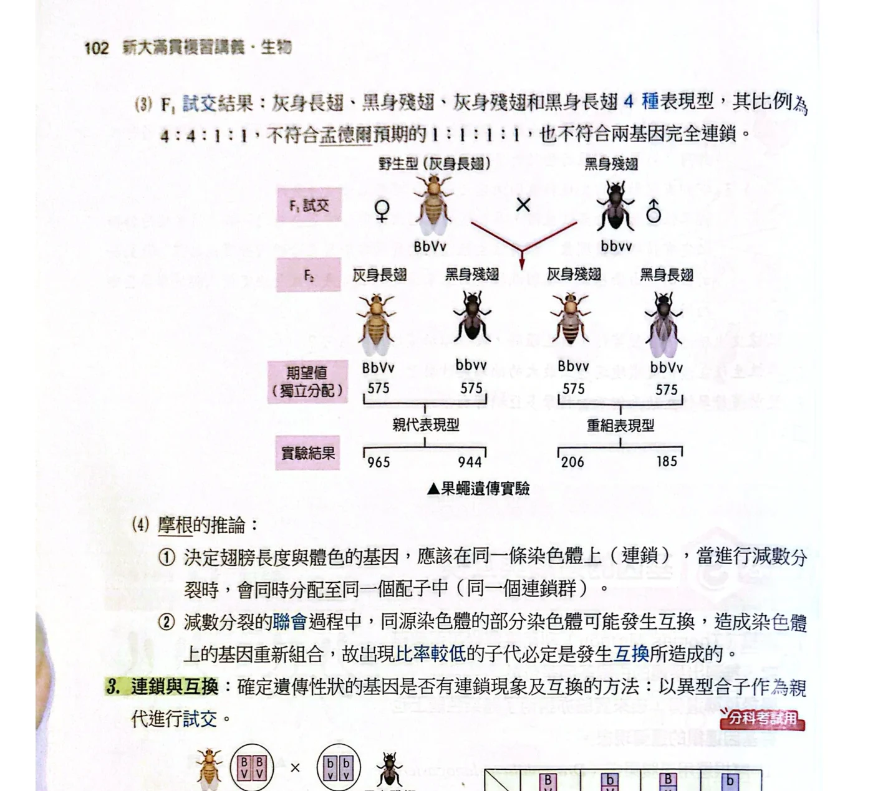
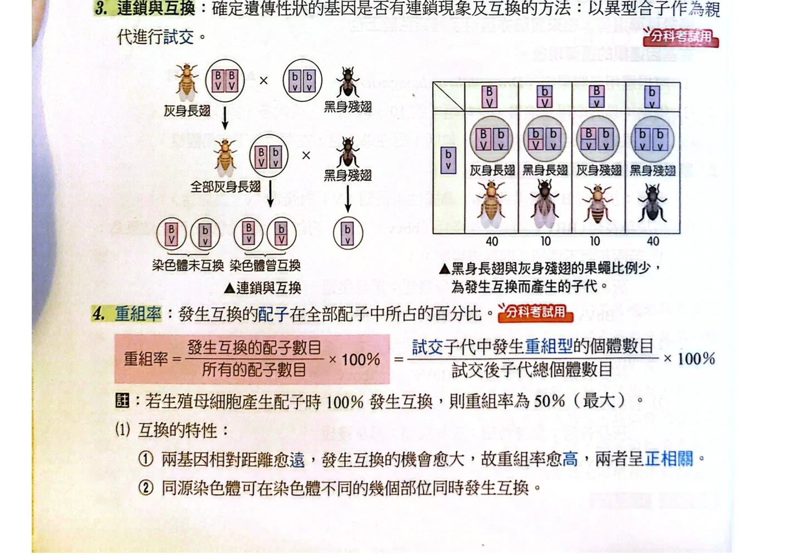
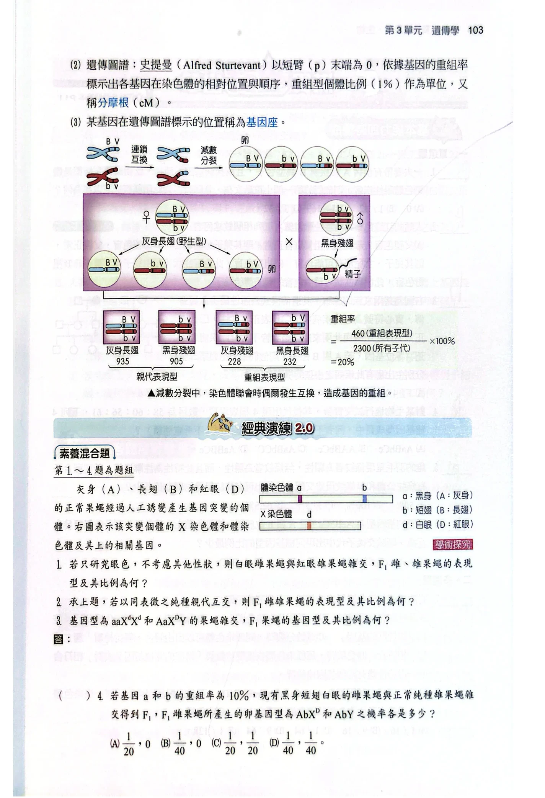
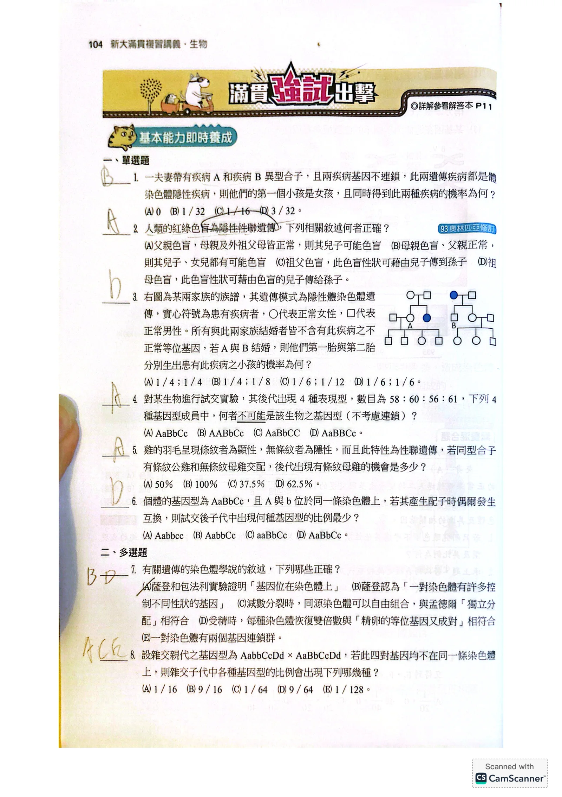
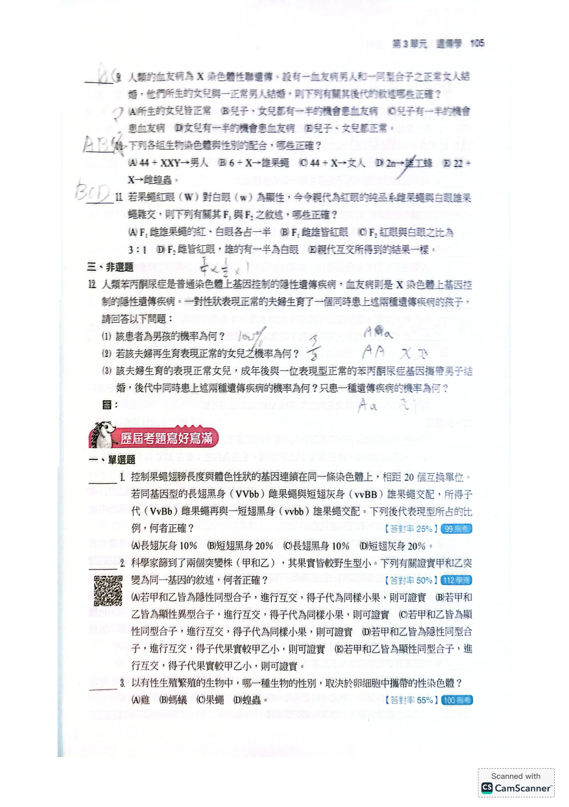
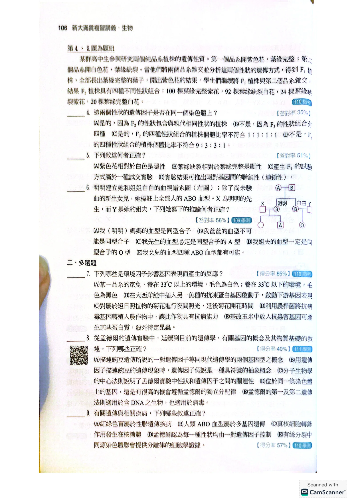
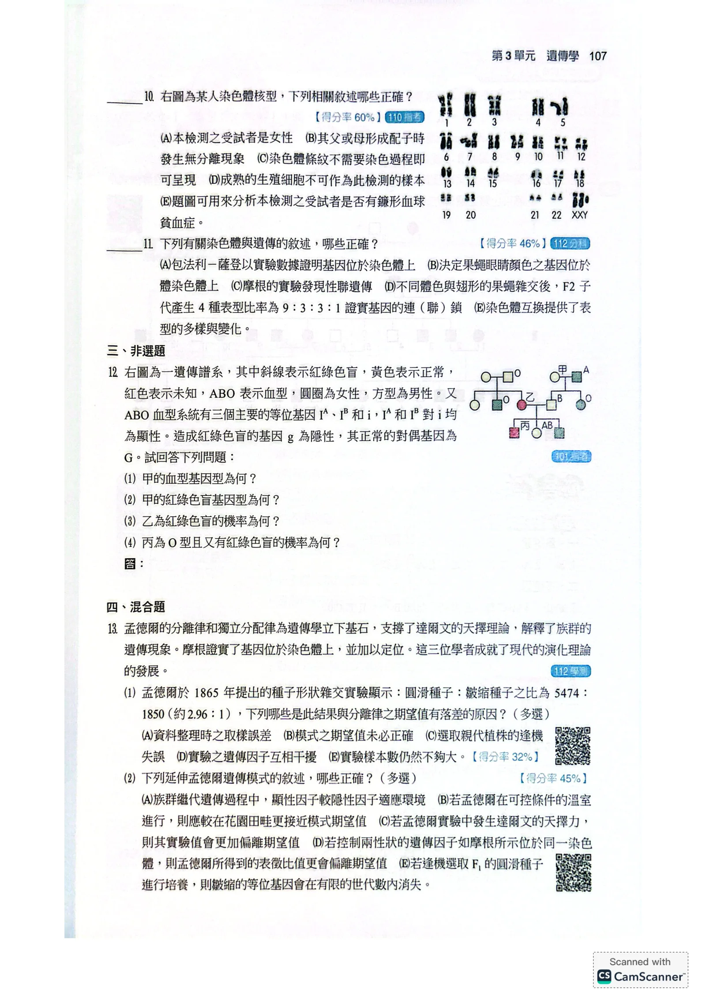
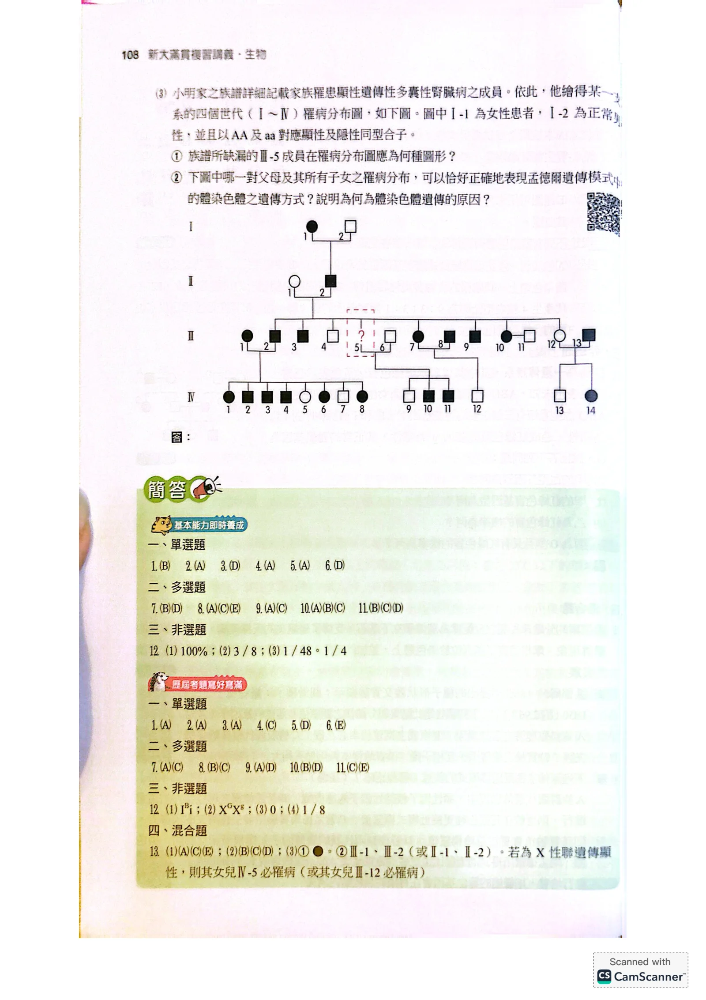

AB／ab在無互換時的兩種配子？
看答案與詳解
解
AB與ab。先沿著同一條染色體讀，不是任意交叉配字母。
若兩個基因像同一串鑰匙上的兩把鑰匙，常一起被帶走，就稱連鎖；但減數分裂時同源染色體可能交換片段，產生新的組合。這個比喻只描述共同傳遞，互換實際發生在非姊妹染色分體之間。

同樣寫AaBb，A與B可在同一條同源染色體上，也可分別與b、a同側。
用AB／ab表示相引排列，用Ab／aB表示相斥排列。
若完全連鎖、無互換，前者只給AB和ab，後者只給Ab和aB。
AB／ab在無互換時的兩種配子？
AB與ab。先沿著同一條染色體讀，不是任意交叉配字母。
AaBb四種配子是否永遠各1/4？
不是。獨立分配才可如此套用；連鎖時須由排列與重組率決定。

與aabb試交時，隱性親代只提供ab，所以子代表現型可用來推回待測親代的配子。
若兩大類親型各400個，兩小類重組型各100個，總數1000，重組率＝(100＋100)÷1000＝20%。
不能只拿一種重組型除總數。
400、400、100、100的試交子代，重組率多少？
兩種重組型合計200，總數1000，重組率為20%。
AB／ab且重組率20%，每種親型與重組配子各多少？
親型AB、ab各40%；重組Ab、aB各10%。兩種親型合計80%，兩種重組型合計20%。

兩點重組率接近50%，可能是不同染色體，也可能是同一染色體上相距很遠，因多次互換掩蓋部分重組。
因此不能由50%唯一判定兩基因一定分居不同染色體。
距離較短時，重組百分比可近似圖距；很遠時不宜直接線性外推。
重組率50%能否證明兩基因一定不同染色體？
不能。同一染色體上相距很遠也可能呈現近似獨立分配。
重組率20%等於20%的細胞都只發生一次互換嗎？
不等於。重組率統計配子或試交子代的重組比例，不能直接當作發生互換的細胞比例。
| 概念 | 判讀重點 | 注意條件 |
|---|---|---|
| 親型 | 與親代同側排列相同 | 低重組率時通常較多 |
| 重組型 | 新的等位基因組合 | 兩類要一起加 |
| 重組率 | 重組型／總數×100% | 兩點分析上限近50% |
以下依PDF頁序保留完整題幹、圖表、選項與原附答。先看題目、遮住原附答作答，再回上面的觀念與例題核對思路。






